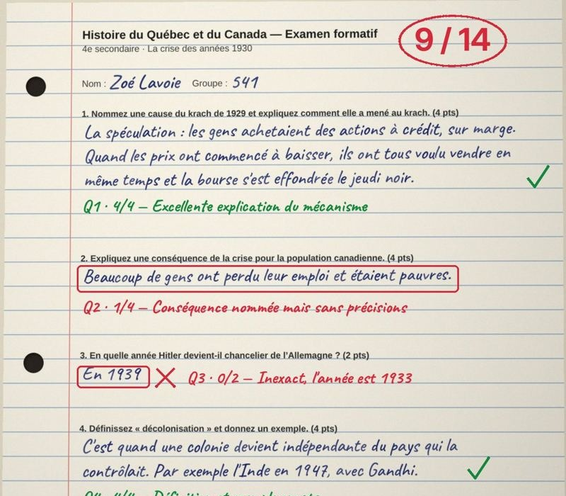

Et les copies écrites à la main ?

Brûle la pile les lit.
- Au crayon, en lettres attachées ou détachées
- Histoire, sciences, français, maths…
- Note et rétroaction pour chaque élève
- Tu relis, tu ajustes, tu décides
Nom de l'élève caché avant l'envoi · aucune copie conservée